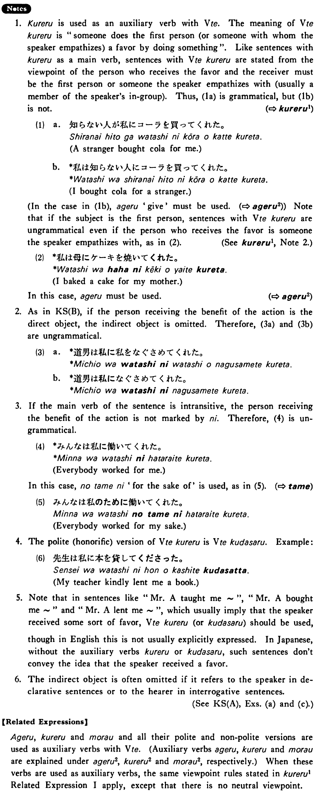

←
DoJG
→
呉れる・くれる (2)
(B. 216)
Example sentences
(ksa).
父は私にカメラを買って
呉れた・呉れました
。
My father bought a camera for me.
(ksb).
道男は私を慰めて
呉れた・呉れました
。
Michio consoled me.
(a).
母は（私に）ケーキを焼いて
呉れた
。
My mother baked a cake for me.
(b).
ウォーカーさんは私の息子に英語を教えて
呉れている
。
Ms. Walker is kindly teaching my son English.
(c).
子供達は（あなたに）何をして
呉れました
か。
What did your children do for you?
Formation
Vて
くれる
話して
くれる
Someone (will) talks for my sake
食べて
くれる
Someone (will) eats for my sake
